Beat montageRitimli montaj
Cuts on the beat, a zoom transition every two bars, emphasis zooms, vivid colour.Vuruşta keser, iki ölçüde bir zoom geçişi, vurgu zoomu, canlı renk.
Drop your clips on one of six recipes and SWEAXCUT builds the edit. whisper.cpp writes the captions word by word, on your PC. Kliplerini altı tariften birine bırak, kurguyu SWEAXCUT kursun. Altyazıyı whisper.cpp kelime kelime, senin bilgisayarında yazar.
The start screen has a drop area, five formats (9:16 for TikTok, Reels and Shorts, 16:9, 1:1, 4:5, 21:9) and six recipe cards that each play a small live preview. Drop your videos on a card and the edit sets itself up. Ana ekranda bir bırakma alanı, beş biçim (TikTok, Reels ve Shorts için 9:16, 16:9, 1:1, 4:5, 21:9) ve her biri küçük bir canlı önizleme oynatan altı tarif kartı var. Videolarını bir karta bırak, kurgu kendiliğinden kurulsun.
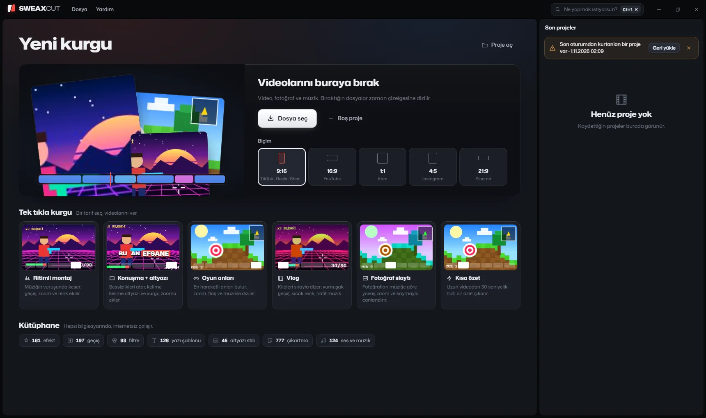
Cuts on the beat, a zoom transition every two bars, emphasis zooms, vivid colour.Vuruşta keser, iki ölçüde bir zoom geçişi, vurgu zoomu, canlı renk.
Cuts the silences, jump zooms, voice clean-up, word-by-word captions, music that ducks under speech.Sessizlikleri keser; sıçrama zoomu, ses netleştirme, kelime kelime altyazı, konuşmada kısılan müzik.
Finds the moments where the sound gets loud and adds a zoom and a flash.Sesin yükseldiği anları bulur, zoom ve flaş ekler.
Clips in order, soft transitions, golden-hour colour, a date title.Klipler sırayla, yumuşak geçiş, altın saat rengi, tarih başlığı.
A slow zoom or pan for every bar of music.Müziğin her ölçüsünde yavaş zoom ya da kayma.
A 30-second recap from a long video.Uzun videodan 30 saniyelik özet.
The tracks in the app's music library have a known tempo, so their beat grid is exact. With your own music, the beats are detected. Uygulamanın müzik kütüphanesindeki parçaların temposu bilindiği için vuruş ızgarası kesindir. Kendi müziğinde vuruşlar algılanır.
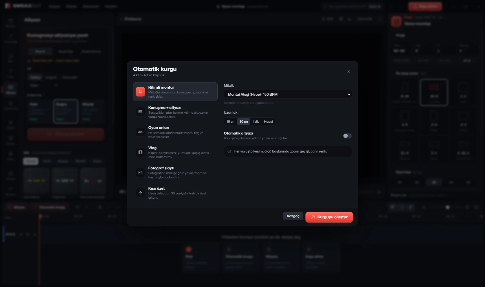
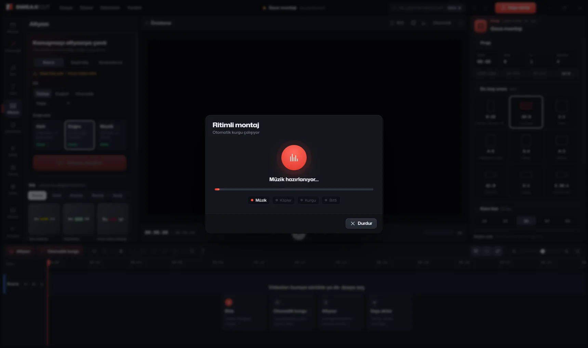
In the packaged app, three clips dropped on the Beat montage card became a 30-second montage with 38 cuts in 6.3 seconds.Paketlenmiş uygulamada Ritimli montaj kartına bırakılan üç klip 6,3 saniyede 38 kesimli, 30 saniyelik bir montaj oldu.
Eight steps over an edit you already have. Each one can be switched on or off; these are the defaults.Elindeki kurgunun üzerinden geçen sekiz adım. Her biri açılıp kapatılabilir; bunlar varsayılanlar.
Ctrl+K searches commands, recipes and every effect, transition, filter, text template and music track. This copy searches what is on this page.Ctrl+K komutları, tarifleri ve her efekti, geçişi, filtreyi, yazı şablonunu ve müziği arar. Bu kopya bu sayfadakileri arıyor.
Colour filter, transitions and caption style in one click.Renk filtresi, geçişler ve altyazı stili tek tıkla.
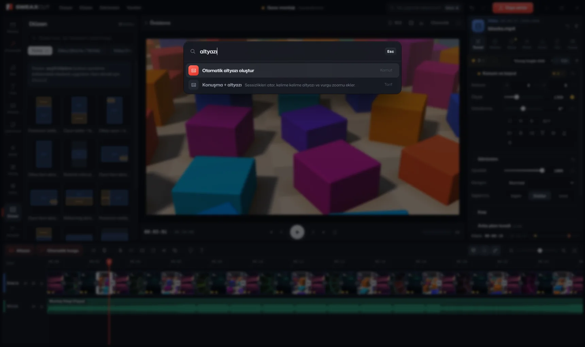
Four generated clips and three cuts. Pick a cut, then a transition, and lay an effect over everything. These are 16 of the app's 197 transitions and 9 of its 161 effects, with the same GLSL code. Dört üretilmiş klip, üç kesim. Bir kesim seç, sonra bir geçiş; istersen hepsinin üstüne bir efekt koy. Buradakiler uygulamadaki 197 geçişin 16'sı ve 161 efektin 9'u; GLSL kodları aynı.
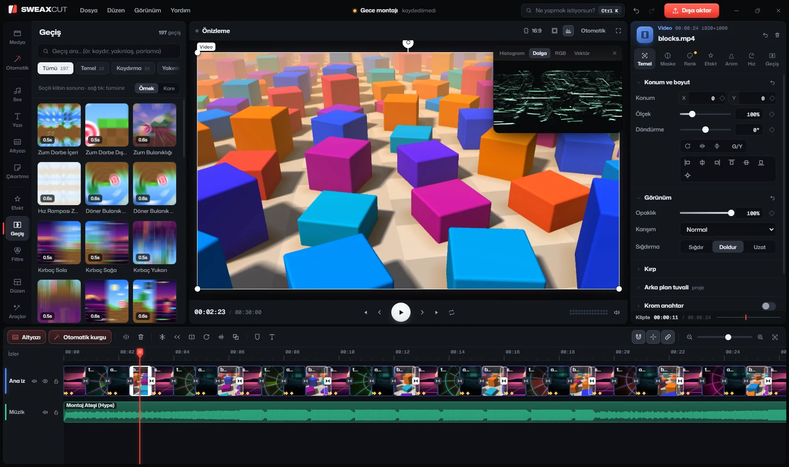
Drag on the timeline to scrub. The clips are drawn live by small shaders written for this page; the audio lane is only a picture. In the app the same transitions run on your own footage, and export at full resolution. Zaman çizelgesinde sürükleyerek gez. Klipleri bu sayfa için yazılmış küçük gölgelendiriciler canlı çiziyor; ses izi yalnızca görsel. Uygulamada aynı geçişler senin görüntülerinde çalışır ve tam çözünürlükte dışa aktarılır.
Applies to the selected cut.Seçili kesime uygulanır.
Sits above all four clips.Dört klibin de üstünde durur.
whisper.cpp (release b5454) turns speech into captions where every word has its own timing. Create them with one click, fix them like a document, then style every line at once. whisper.cpp (b5454 sürümü) konuşmayı, her kelimesinin kendi zamanı olan altyazıya çevirir. Tek tıkla oluştur, belge gibi düzelt, sonra bütün satırları birlikte biçimlendir.
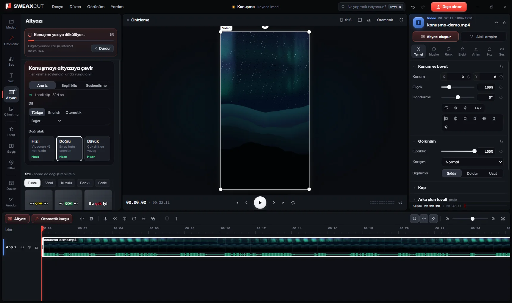
From the clip's inspector, the timeline toolbar or the clip's right-click menu. Pick the accuracy:Klibin denetçisinden, zaman çizelgesi araç çubuğundan ya da klibin sağ tık menüsünden. Doğruluğu seç:
Word timing comes from DTW. Skip music and game sound runs Silero VAD first, and a filter drops made-up text such as "bzzzz".Kelime zamanı DTW ile bulunur. Müzik ve oyun sesini atla önce Silero VAD çalıştırır; bir süzgeç de "bzzzz" gibi uydurma yazıyı atar.
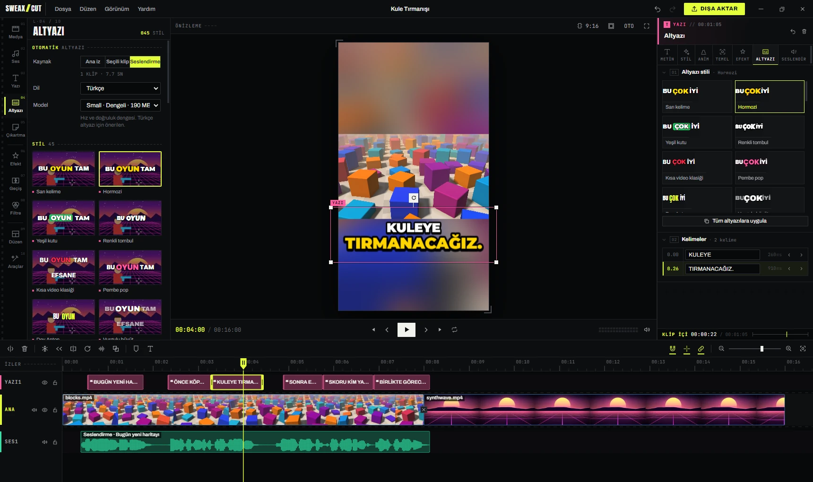
All the lines read like one document.Bütün satırlar tek bir belge gibi okunur.
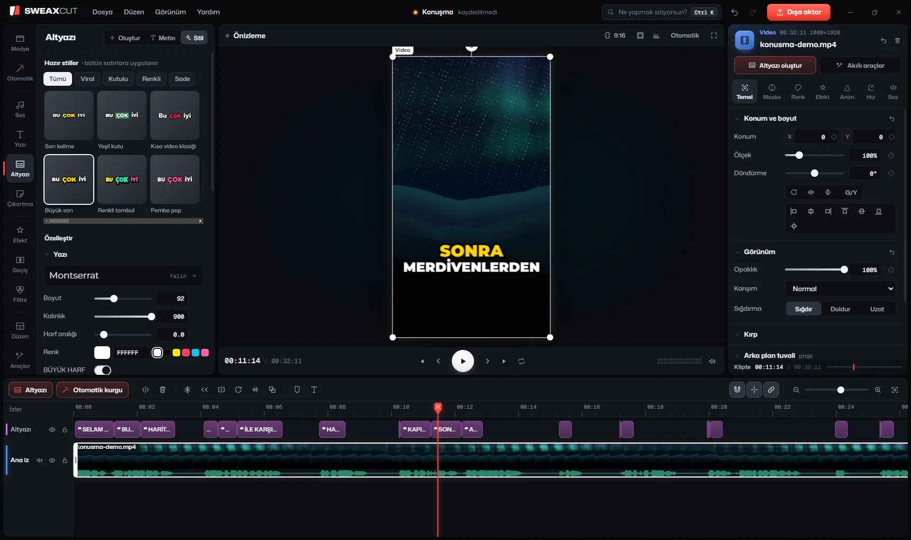
Every line at once, live in the preview. 45 presets drawn by the real caption renderer, and Save this style for your own.Bütün satırlara aynı anda, önizlemede canlı. Gerçek çiziciyle önizlenen 45 hazır stil ve kendi stilin için Bu stili kaydet.
A few of the real options, on sample lines. The words are timed one by one, as whisper.cpp times them.Gerçek seçeneklerin birkaçı, örnek satırlarda. Kelimeler whisper.cpp'nin zamanladığı gibi tek tek zamanlı.
66 seconds of Turkish TTS speech, all five models (scripts/test-captions.cjs), AMD Ryzen 5 7600, on the processor. Word error rate; shorter is better.66 saniyelik Türkçe TTS konuşması, beş model (scripts/test-captions.cjs), AMD Ryzen 5 7600, işlemcide. Kelime hata oranı; kısa olan iyi.
The panels on the left of the editor. The counts below were read from the app's content registry (src/engine/registry.js).
Editörün solundaki paneller. Aşağıdaki sayılar uygulamanın içerik kayıt defterinden (src/engine/registry.js) okundu.
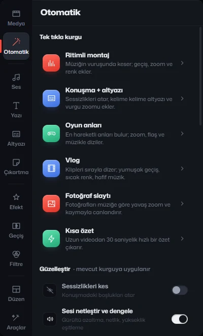
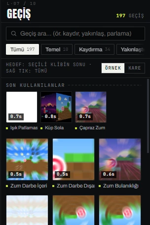
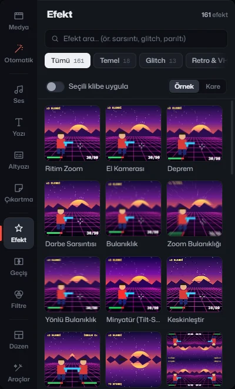
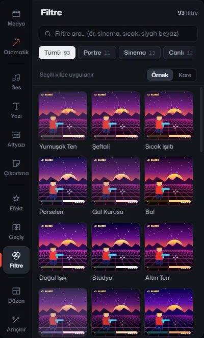
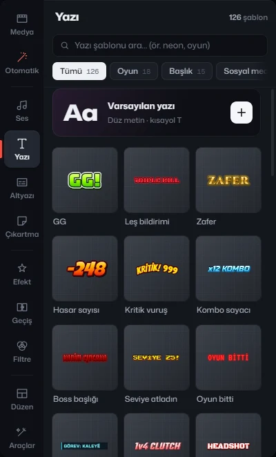
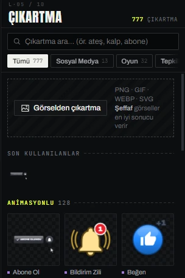
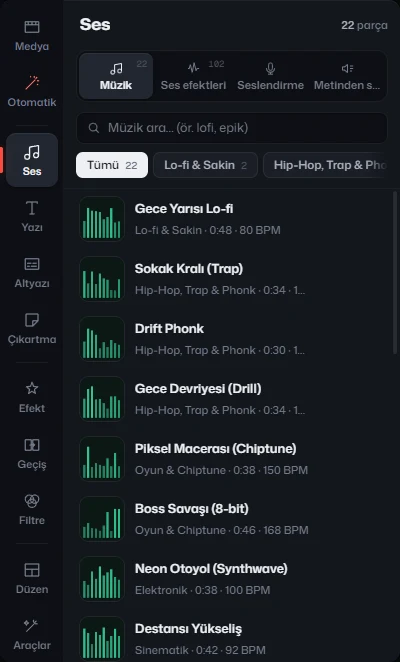
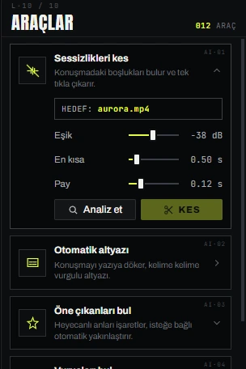
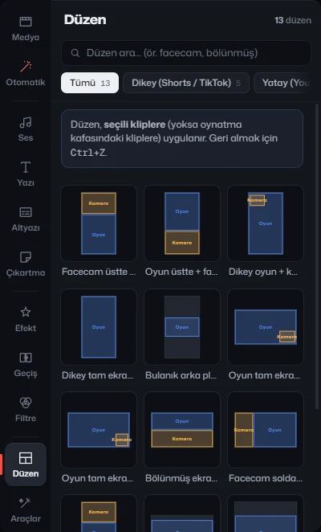
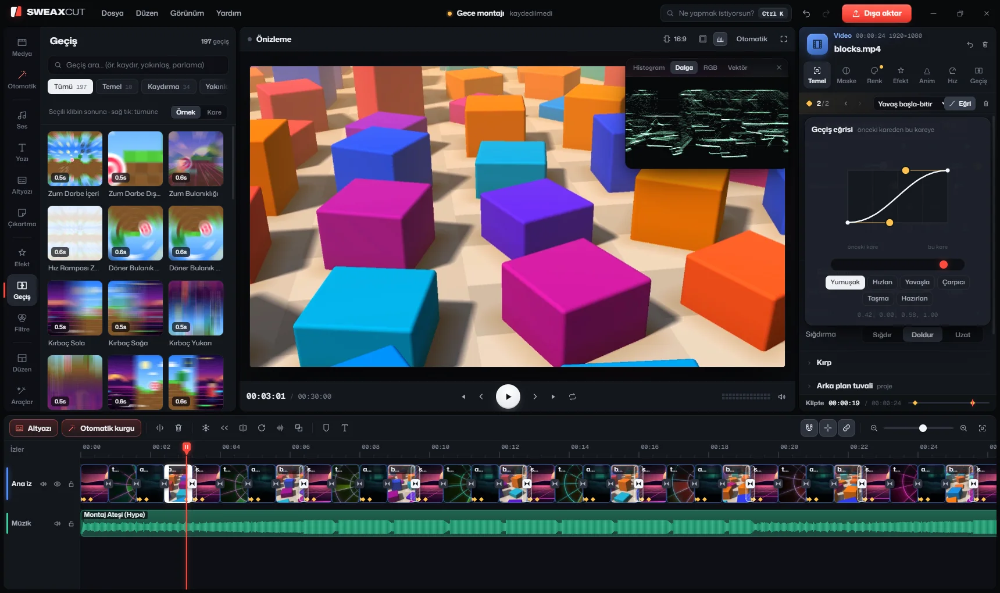
Drag the gold handles. Values run from −0.5 to 1.5, so a move can overshoot or pull back first; the presets are the six from the app.Altın tutamaçları sürükle. Değerler −0,5 ile 1,5 arasında; hareket hedefini aşabilir ya da önce geri çekilebilir. Hazır eğriler uygulamadaki altı eğri.
Preview and export are drawn by the same WebGL2 compositor. Encoding uses the graphics card when it can: NVIDIA NVENC, AMD AMF or Intel Quick Sync. The dialog adds no watermark. Önizlemeyi ve dışa aktarmayı aynı WebGL2 bileşimci çizer. Kodlama mümkünse ekran kartında yapılır: NVIDIA NVENC, AMD AMF ya da Intel Quick Sync. Pencere filigran eklemez.
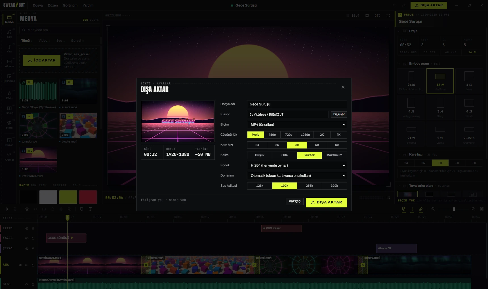
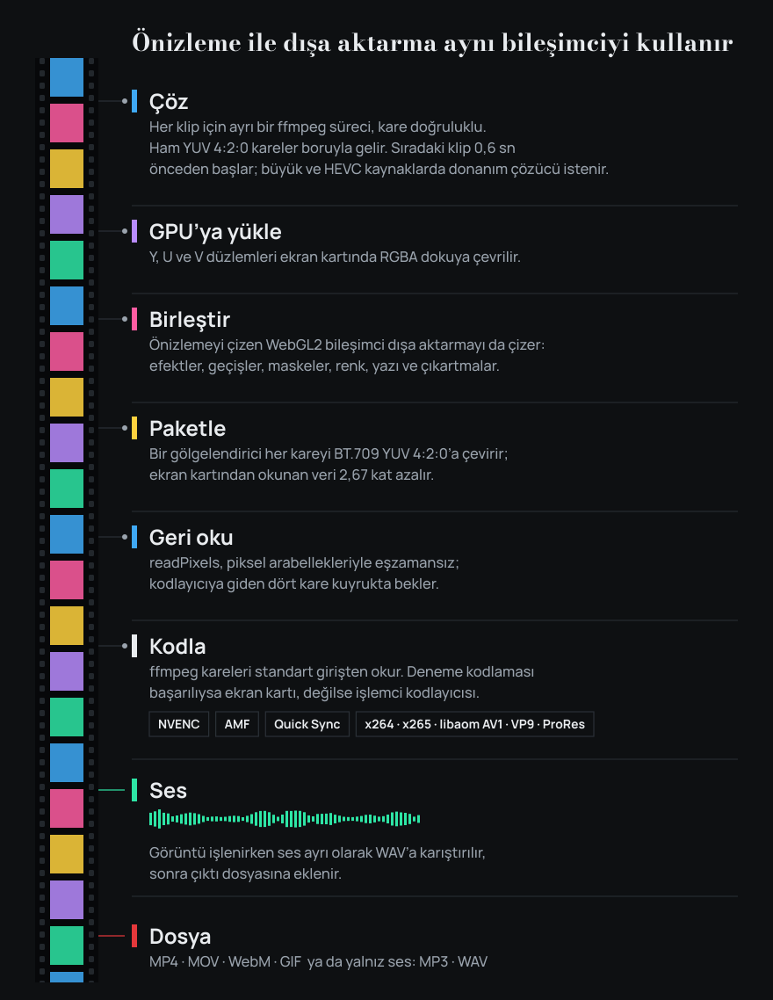
Measured on one machine with an AMD Ryzen 5 7600, using the packaged app. An exported sample.AMD Ryzen 5 7600'lü tek bir makinede, paketlenmiş uygulamayla ölçüldü. Dışa aktarılmış bir örnek.
Your videos are edited on your computer and are not uploaded anywhere. No account, no analytics, no telemetry, no update check. The app goes online only when you start one of these:Videoların bilgisayarında düzenlenir, hiçbir yere yüklenmez. Hesap, analiz, telemetri, güncelleme denetimi yok. Uygulama yalnızca sen şunlardan birini başlatınca internete çıkar:
| A caption model not yet on diskDiskte olmayan altyazı modeli | huggingface.co/ggerganov/whisper.cpp, hf-mirror.com; size and SHA-256 checkedboyut ve SHA-256 denetlenir |
| A Piper voice not yet installedKurulu olmayan Piper sesi | huggingface.co (rhasspy/piper-voices, speaches-ai) |
| ProjectsProjeler | Documents\SWEAXCUT\ProjelerBelgeler\SWEAXCUT\Projeler |
| Autosave, every 45 sOtomatik kayıt, 45 sn'de bir | %APPDATA%\SWEAXCUT\autosave\ |
| Caption stylesAltyazı stilleri | %APPDATA%\SWEAXCUT\caption-styles.json |
| Preview copies, waveformsÖnizleme kopyaları, dalgalar | %APPDATA%\SWEAXCUT\cache\ |
| Speech modelsKonuşma modelleri | %APPDATA%\SWEAXCUT\models\whisper\ |
| ExportsDışa aktarılanlar | Videos\SWEAXCUTVideolar\SWEAXCUT |
SWEAXCUT-Kurulum-3.0.0.exe (about 214 MB) from the latest release.Son sürümden SWEAXCUT-Kurulum-3.0.0.exe dosyasını indir (yaklaşık 214 MB)..sweax files and opens the app.Çalıştır. Senin kullanıcı hesabına kurulur, kısayol ekler, .sweax dosyalarını tanıtır ve uygulamayı açar.The installer is not code-signed, so Windows SmartScreen may show a blue warning the first time. Click More info, then Run anyway.Kurulum dosyası kod imzalı değil, bu yüzden Windows SmartScreen ilk seferde mavi bir uyarı gösterebilir. Ek bilgi'ye, sonra Yine de çalıştır'a tıkla.
Needs 64-bit Windows 10 or 11 and a graphics card with WebGL 2. A hardware video encoder makes exports faster but is not required.64 bit Windows 10 ya da 11 ve WebGL 2 destekli ekran kartı gerekir. Donanım video kodlayıcısı dışa aktarmayı hızlandırır ama şart değil.
git clone https://github.com/Sweax3169/sweaxcut.git npm install npm run prepare:vendor npm run dist
Only to download a speech model the first time you use it, and extra Piper voices. Editing, the recipes, the bundled Turkish voice and the export work offline.Yalnızca bir konuşma modelini ilk kullanımda ve ek Piper seslerini indirmek için. Kurgu, tarifler, gömülü Türkçe ses ve dışa aktarma internetsiz çalışır.
Not yet; the interface is in Turkish. Captions can be made in English, or with automatic language detection.Henüz yok; arayüz Türkçe. Altyazı İngilizce ya da otomatik dil algılamayla da oluşturulabilir.
Accurate (medium) is recommended: 2.6 % errors on Turkish in the measurement. Fast (small) took 13.5 s instead of 42.6 s, with 6.0 % errors.Doğru (medium) önerilen: ölçümde Türkçede %2,6 hata. Hızlı (small) 42,6 sn yerine 13,5 sn sürdü, hata %6,0.
Turn on Skip music and game sound. Voice activity detection runs before whisper, and a filter removes made-up text such as "bzzzz".Müzik ve oyun sesini atla seçeneğini aç. Whisper'dan önce konuşma algılama çalışır, bir süzgeç de "bzzzz" gibi uydurma yazıyı atar.
No. It is licensed CC BY-NC-SA 4.0, which does not allow commercial use. The bundled voice Fahrettin is CC0.Hayır. Lisansı CC BY-NC-SA 4.0; ticari kullanıma izin vermez. Gömülü ses Fahrettin CC0.
It is autosaved every 45 seconds, and the start screen offers to restore it.45 saniyede bir otomatik kaydedilir; ana ekran geri yüklemeyi önerir.